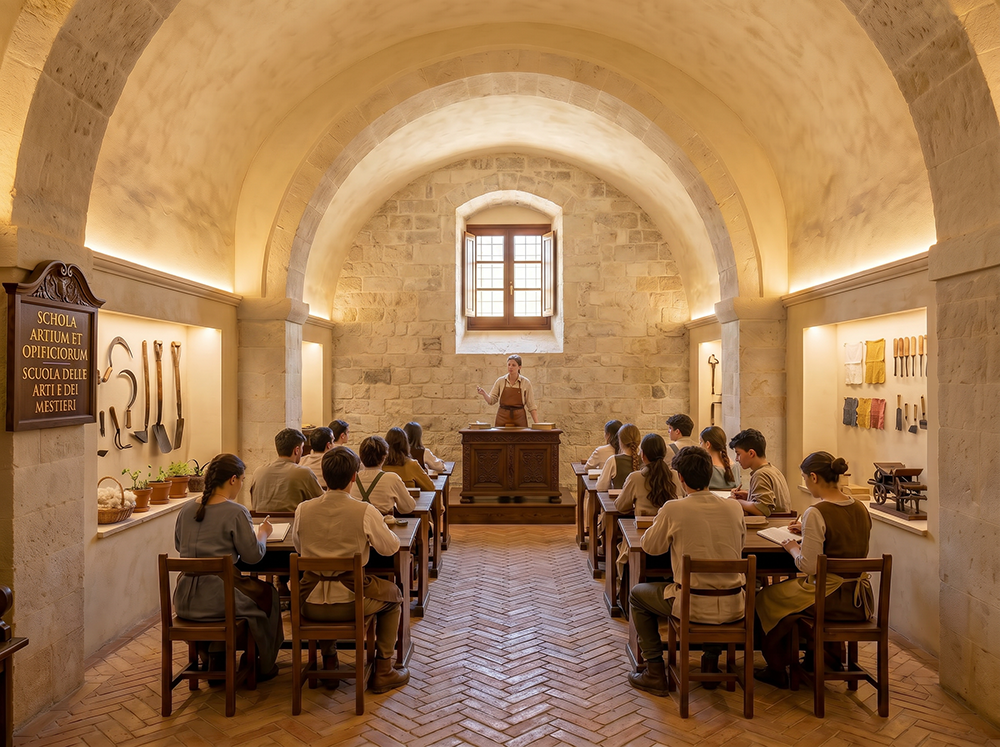
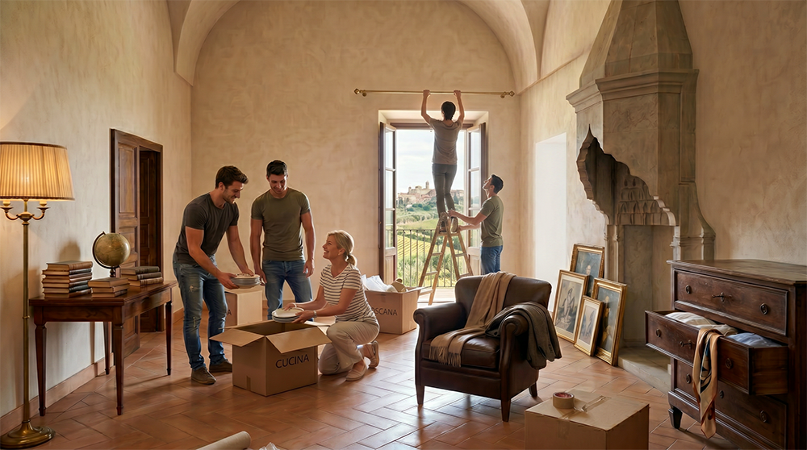
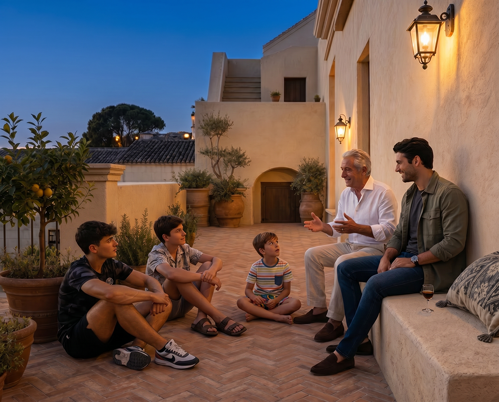
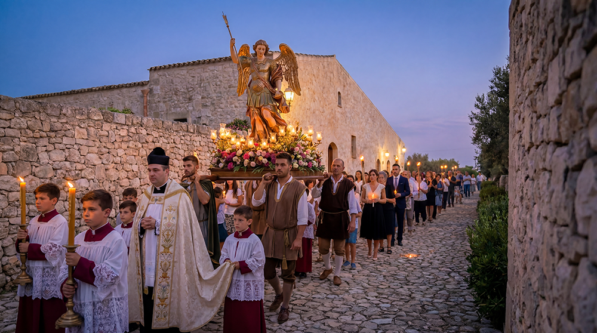
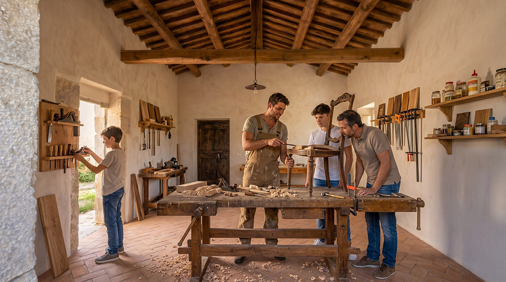
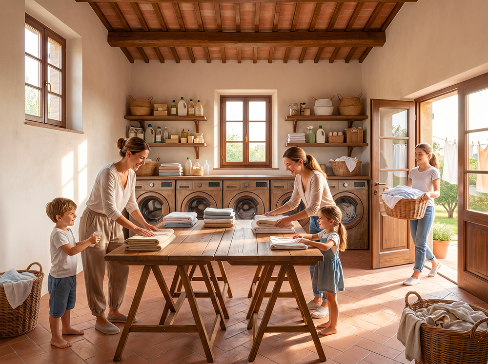

Il Baglio San Michele nasce per famiglie e persone che stanno compiendo una scelta profonda e lungimirante di vita.
Cerchiamo principalmente nuclei familiari composti da genitori tra i 35 e i 50 anni, con uno o più figli in età scolare o prescolare, che desiderano lasciare il ritmo frenetico e precario delle grandi città per un contesto rurale preservato nel cuore della Sicilia.
Non cerchiamo semplicemente acquirenti. Cerchiamo persone pronte a diventare parte attiva di una comunità intenzionale tradizionale, fondata sulla reciprocità, sulla trasmissione dei valori e sulla responsabilità verso il bene comune.
Le ragioni di una scelta tempestiva
Stiamo assistendo a una convergenza di crisi — tecnologica, economica, geopolitica e culturale — che sta rendendo sempre più fragile la possibilità per le famiglie di condurre una vita stabile e radicata.
L’automazione e l’intelligenza artificiale minacciano interi settori occupazionali, mentre le grandi città diventano progressivamente più costose, anonime e insicure. Parallelamente, politiche ispirate a logiche globali stanno erodendo la sovranità alimentare italiana, penalizzando l’agricoltura e l’allevamento familiare a vantaggio di modelli produttivi concentrati e delocalizzati.
In questo contesto, la capacità di garantire ai propri figli un ambiente sicuro, relazioni umane autentiche e accesso a cibo sano e locale non è più scontata. Diventa invece una scelta strategica e lungimirante.
Il Baglio San Michele si propone come una risposta concreta a queste trasformazioni: un luogo in cui ricostruire, su basi tradizionali ma attualizzate, condizioni di stabilità, autonomia e trasmissione dei valori che il processo di globalizzazione rende sempre più difficili da preservare.
Le motivazioni che guidano la scelta

Educazione dei figli
Un ambiente in cui i bambini crescano a contatto con la natura e con valori solidi.

Stabilità e sicurezza
Un luogo prevedibile e protetto, lontano dalla precarietà urbana.

Qualità delle relazioni
Rapporti umani autentici, in cui le persone si conoscano e si aiutino realmente.

Trasmissione di valori
Trasmettere ai figli identità, fede e radicamento in un’epoca di grande fragilità.
I profili che stiamo cercando

Famiglie in cerca di radici
Vivono nelle grandi città e desiderano un contesto più umano, stabile e generazionale per i propri figli.

Famiglie cattoliche tradizionali
Attente alla dimensione spirituale e all’educazione valoriale secondo la tradizione cattolica.

Famiglie/single orientati all’artigianato e ai mestieri
Persone (singole o in famiglia) che apprezzano profondamente il lavoro manuale, i mestieri tradizionali e la trasmissione intergenerazionale di competenze concrete.

Famiglie/single orientati allo Slow Living e alla bellezza della vita rurale tradizionale
Persone che ricercano un ritmo di vita più lento, autentico e armonioso con il paesaggio e le tradizioni del territorio.
Iniziamo a conoscerci
Se ti identifichi in uno di questi profili, puoi scriverci e inizieremo il percorso di conoscenza reciproca.